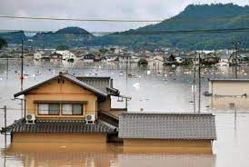
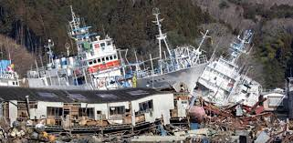

Volcanic Eruptions
Volcanic eruptions are natural disasters that occur when there is a release of magma, gas, and other materials from a volcano. They can be highly destructive and have significant impacts on the surrounding environment and communities.
Types of Volcanic Eruptions
| Type | Description |
|---|---|
| Effusive Eruptions | Lava flows steadily and continuously. |
| Explosive Eruptions | Violent explosions ejecting pyroclastic material. |
| Phreatomagmatic Eruptions | Water interacts with magma, causing explosive eruptions. |
| Plinian Eruptions | Enormous eruptions with high ash clouds. |
| Strombolian Eruptions | Regular small to moderate eruptions. |
Effects of Volcanic Eruptions
- Release of lava and pyroclastic materials
- Ashfall and volcanic gases
- Triggering of lahars, landslides, and tsunamis
- Climate impact due to volcanic aerosols
- Disruption of ecosystems and agriculture
Safety Measures
- Following evacuation orders
- Staying away from volcanic areas
- Wearing protective masks in ashfall conditions
- Monitoring updates from local authorities
Mount Krakatoa Eruption
Additional Sources
Floods
Floods are natural disasters that occur when an area experiences an overflow of water, usually due to heavy rainfall, river overflow, or coastal storms. They can cause extensive damage to infrastructure, property, and human lives.
Causes of Floods
- Heavy rainfall
- River overflow
- Tropical storms and hurricanes
- Melting snow and ice
- Dam or levee failures
Effects of Floods
- Destruction of homes and infrastructure
- Loss of crops and livestock
- Contamination of water sources
- Displacement of communities
- Health risks due to waterborne diseases
Safety Measures
- Listen to weather alerts and evacuation orders
- Avoid walking or driving through floodwaters
- Move to higher ground if instructed
- Have an emergency kit ready
- Follow the guidance of local authorities
2018 Japanese Floods
The 2018 Japanese floods were a series of devastating flooding events that occurred in Japan during the summer of 2018. Heavy rainfall caused rivers to overflow, leading to widespread flooding in several regions of the country. The floods resulted in numerous casualties, displacement of residents, and significant damage to infrastructure and property.
Additional Sources
Earthquakes
Earthquakes are natural disasters that result from the sudden release of energy in the Earth's crust, leading to seismic waves. They can cause widespread destruction and have devastating consequences for communities and infrastructure.
Causes of Earthquakes
Earthquakes can be caused by various factors:
- Tectonic plate movements
- Volcanic activity
- Human-induced activities (e.g., mining, reservoir-induced seismicity)
Effects of Earthquakes
Earthquakes can have severe effects:
- Ground shaking and surface rupture
- Building and infrastructure damage
- Landslides and avalanches
- Tsunamis (if the earthquake occurs under the ocean)
- Loss of life and injuries
Safety Measures
To enhance earthquake safety, consider these measures:
- Identify safe places within buildings (e.g., under sturdy furniture)
- Create an emergency plan and practice drills
- Secure heavy objects and furniture
- Stay away from windows and glass
- Be prepared with emergency supplies
Great East Japan Earthquake
The Great East Japan Earthquake, also known as the 2011 Tōhoku earthquake, was a powerful earthquake that struck off the coast of Japan on March 11, 2011. The magnitude 9.0 earthquake triggered a massive tsunami, resulting in widespread devastation and the Fukushima nuclear disaster.
Additional Sources
Explore more about Earthquakes:
Tsunamis
Tsunamis are large ocean waves that are primarily caused by underwater earthquakes or volcanic eruptions. They can travel across the ocean at high speeds and cause significant devastation when they reach coastal areas.
Causes of Tsunamis
Tsunamis can be triggered by:
- Underwater earthquakes
- Volcanic eruptions
- Underwater landslides
- Impact of meteorites in the ocean
Effects of Tsunamis
The impacts of tsunamis include:
- Destruction of coastal infrastructure
- Flooding of coastal areas
- Loss of lives
- Damage to marine ecosystems
Tsunami Warning Systems
To mitigate the risks associated with tsunamis, several countries have implemented tsunami warning systems. These systems help detect potential tsunamis and issue timely alerts to coastal communities, allowing them to evacuate to safer areas.
Additional Resources
Explore more about tsunamis:
Landslides
Landslides are the downward movement of rocks, soil, and debris on slopes. They can be triggered by various factors, including heavy rainfall, earthquakes, volcanic activity, and human activities.
Causes of Landslides
Common causes of landslides include:
- Heavy or prolonged rainfall
- Slope instability
- Earthquakes
- Volcanic eruptions
- Deforestation and land clearing
Effects of Landslides
Landslides can have significant consequences:
- Destruction of buildings and infrastructure
- Loss of lives
- Displacement of communities
- Damage to natural habitats
Landslide Mitigation and Preparedness
Efforts to mitigate landslide risks include:
- Identifying landslide-prone areas and implementing land-use regulations
- Building retaining walls and other slope stabilization measures
- Monitoring and early warning systems
- Educating communities on landslide preparedness
Additional Resources
Learn more about landslides:
Hurricanes
Hurricanes, also known as tropical cyclones or typhoons, are powerful storms that form over warm ocean waters. They are characterized by strong winds, heavy rainfall, and storm surges, posing a significant threat to coastal areas.
Formation of Hurricanes
Hurricanes develop when several conditions are met:
- Warm ocean waters (above 26.5°C or 80°F)
- Moist and unstable atmospheric conditions
- Low vertical wind shear
- Presence of a pre-existing disturbance (e.g., tropical wave)
Effects of Hurricanes
Hurricanes can have severe impacts:
- Destructive winds causing structural damage
- Intense rainfall leading to flooding
- Storm surges and coastal erosion
- Tornadoes within the hurricane system
- Disruption of essential services (power, water, communication)
Hurricane Preparedness
To prepare for hurricanes, it is essential to:
- Monitor weather updates and evacuation orders
- Create an emergency plan and assemble a disaster supply kit
- Secure or reinforce property against strong winds
- Stay in a safe location during the storm
Additional Resources
Explore more about hurricanes: